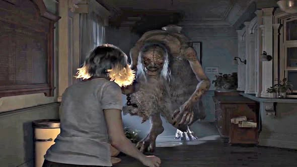
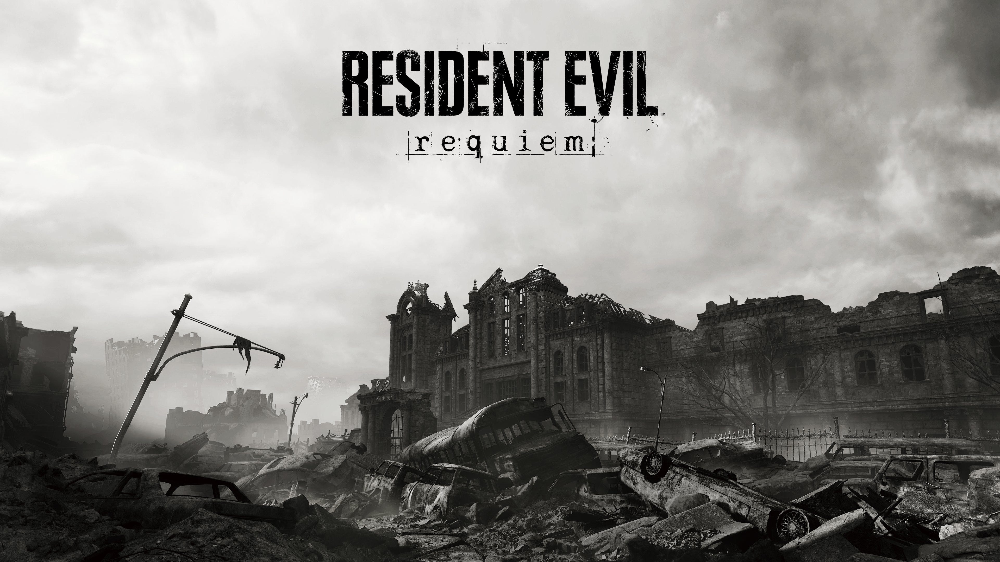

Visão geral

Resident Evil Requiem é o nono jogo principal da franquia, com lançamento previsto para 27 de fevereiro de 2026 para PlayStation 5, Xbox Series X|S, PC e Nintendo Switch 2. Desenvolvido na RE Engine, o jogo promete ser um retorno ao survival horror, com foco em atmosfera pesada, exploração e gerenciamento de recursos.
A nova protagonista é Grace Ashcroft, uma analista do FBI enviada para investigar uma série de mortes misteriosas em um hotel nas ruínas de Raccoon City. A história se conecta diretamente ao passado da cidade e à trajetória de sua mãe, a repórter Alyssa Ashcroft.
Grace e Alyssa Ashcroft
Grace é filha de Alyssa Ashcroft, jornalista que já havia se envolvido com o incidente de Raccoon City nos eventos relacionados a Resident Evil Outbreak. Em Requiem, Alyssa retorna com um papel importante, servindo como elo entre o novo desastre e os horrores do passado.
A dinâmica entre mãe e filha é um dos pontos centrais da trama. Parte da investigação de Grace envolve descobrir o que realmente aconteceu com Alyssa e qual a ligação dela com os novos casos de mortes no hotel onde a história se desenrola.
Cenário e atmosfera
Requiem leva o jogador de volta às ruínas de Raccoon City, anos depois da destruição da cidade. Entre escombros, áreas bloqueadas e estruturas improvisadas, um hotel se tornou palco de novos incidentes envolvendo criaturas e possíveis armas biológicas.
A promessa é de um clima de terror mais contido e sufocante, misturando corredores apertados, áreas parcialmente inundadas, quartos abandonados e zonas de investigação tensa, com pouca munição e a constante sensação de que algo está observando o jogador.
Jogabilidade e estilo
Seguindo a linha dos jogos recentes, Requiem mantém a perspectiva em primeira pessoa, combinando:
- Exploração detalhada de ambientes interligados em um grande cenário;
- Foco em gerenciamento de recursos e munição limitada;
- Puzzles ambientais e uso de documentos para montar o quebra-cabeça da história;
- Encontros com inimigos que exigem tanto combate quanto fuga estratégica.
A Capcom também destaca que o jogo busca ser um dos capítulos mais sombrios da franquia, reforçando o lado de horror em vez de apostar apenas em ação.
Personagens do passado e rumores
Desenvolvedores já comentaram que personagens de jogos anteriores vão aparecer em Requiem, mas pediram para os fãs não criarem expectativas exageradas sobre grandes reuniões de elenco. A ideia é trazer conexões com o passado sem transformar o jogo apenas em fan service.
Rumores envolvendo o retorno de Leon S. Kennedy com tapa-olho circularam pela internet, mas foram classificados como “fake news” pela própria equipe de produção. Até agora, a única certeza é que Requiem quer manter o foco em Grace e na história das Ashcroft, com participações pontuais de rostos conhecidos.
Edições, pré-venda e extras
O jogo contará com edições diferentes em pré-venda, incluindo versões Standard e Deluxe, com conteúdos cosméticos extras como trajes alternativos, skins de armas e filtros visuais.
Também foram anunciados itens especiais em algumas plataformas, como um controle temático para o Nintendo Switch 2, bônus digitais e conteúdos cosméticos inspirados em personagens de outros jogos da franquia.
Expectativas para o lançamento
Por ser o nono jogo principal e um retorno direto a Raccoon City, Resident Evil Requiem carrega uma grande expectativa. A combinação de protagonista inédita, conexão familiar com o passado, cenário clássico em ruínas e foco em terror faz com que muitos fãs vejam o jogo como um possível “fechamento” da fase atual da série.
Resta saber como Grace, Alyssa e os elementos de Outbreak serão integrados à narrativa geral da franquia e quais segredos ainda restam escondidos nos escombros da cidade que se tornou símbolo do caos biológico da Umbrella.
Galeria de imagens


Saiba mais
Para acompanhar trailers, imagens oficiais e notícias do jogo, acesse: